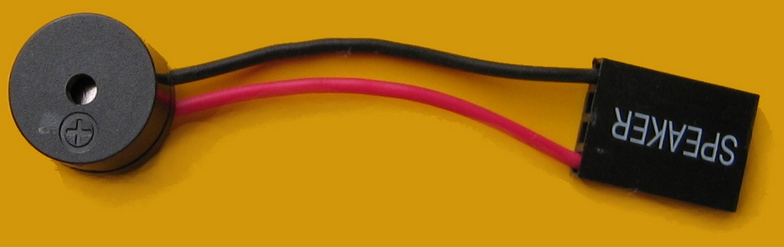
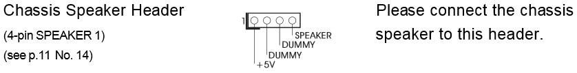
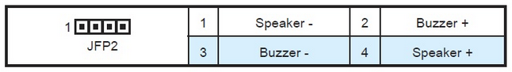

Разъем PC-спикера выглядит так:

Контакты в разъеме PC-спикера имеют следующее назначение:

Dummy - это неиспользуемый контакт. Часто контакт номер 2 помечают как Key (ключ), и штырька для него на материнской плате может не быть. Но не всегда.
В любом случае, для работы PC-спикера нужно подключение 1-го и 4-го контакта к головке динамика.
Вообще, разъем для PC-спикера обозначается как JFP2, и он предусматривает, помимо динамика, подключение некоего устройства с названием Buzzer (жужжалка, звонок) на контактах 2 и 3.

Это, в свою очередь, порождает некорректную документацию на некоторые материнки, где обозначено, что для подключения PC-спикера нужно использовать контакты 1 и 2, хотя по факту, как было сказано выше, для PC-спикера необходимо подключение на контакты 1 и 4, и только так.